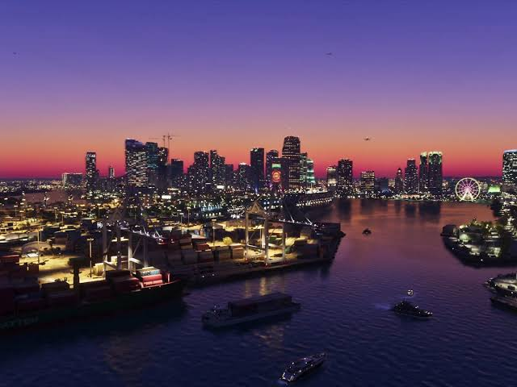
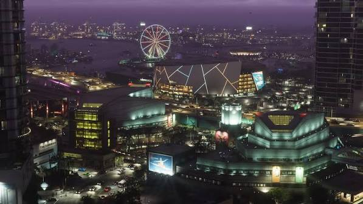
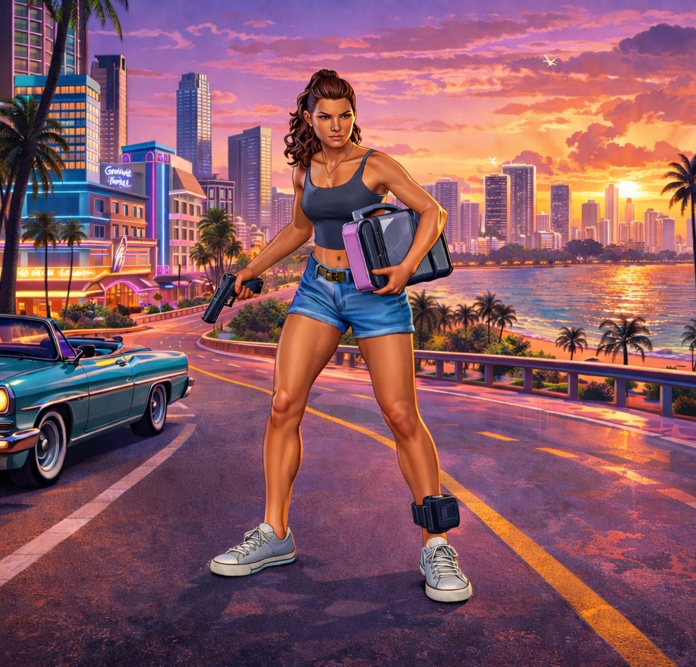
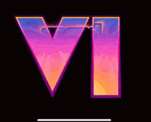
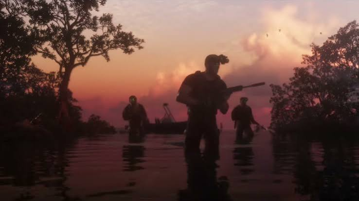
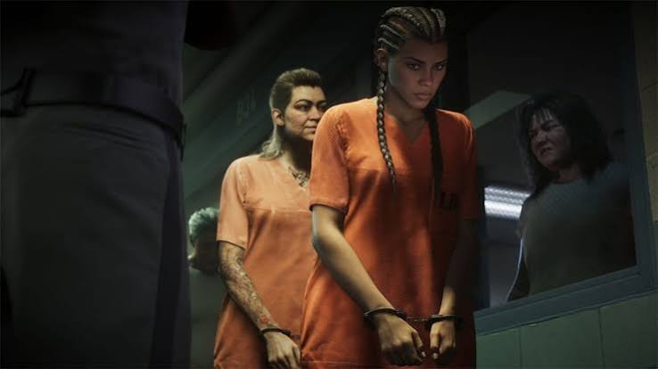

Galería de Ilustraciones de Vice City







Banda sonora
"Se Me Nota Agarrame" de Chimbala Y Omega
"Blood In Your Eyes" de Tove Lo






"Se Me Nota Agarrame" de Chimbala Y Omega
"Blood In Your Eyes" de Tove Lo